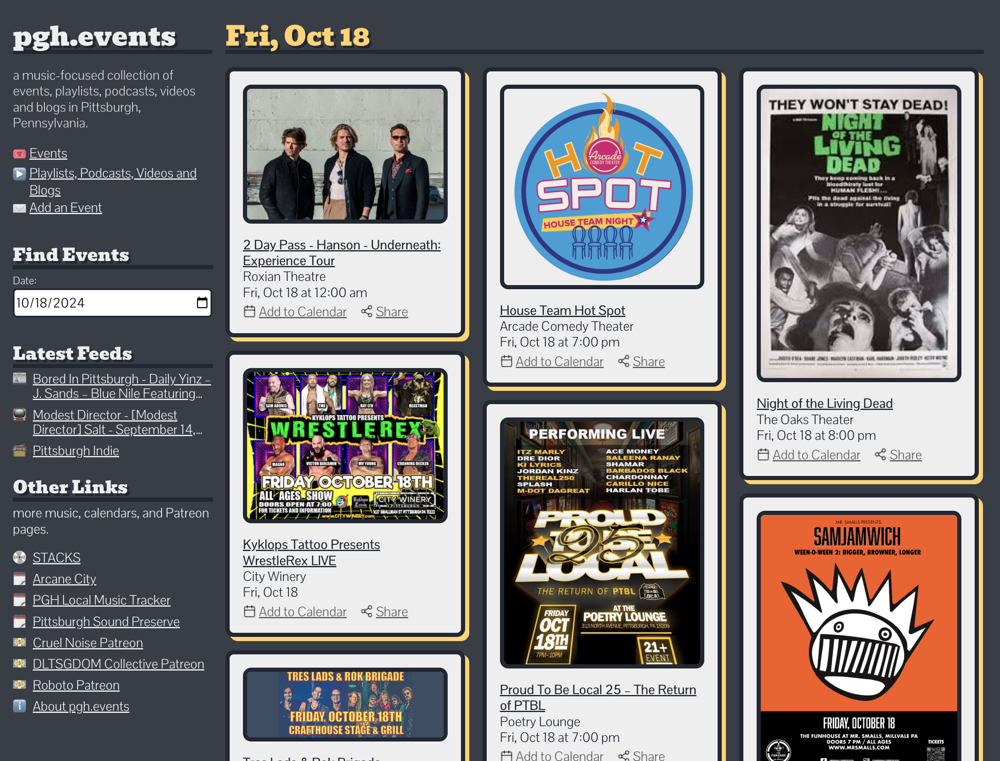

🵠Crush Curl - Physical Medium
5 song EP, released November 10, 2023.
ğŸ–¥ï¸ pgh.events
A music-focused collection of events, playlists, podcasts, youtube channels and blogs in Pittsburgh, Pennsylvania.

🵠The Real Sea - Sure Thing
Single, released on August 4, 2023.

ğŸ–¥ï¸ Listen to Something
Some of my favorite music feeds, all in one place.

🵠The Real Sea - Fall / Awake
Single, released on April 10, 2023.

🵠Pat Coyle - Are You Already There?
Single, released on December 9, 2022.

🵠Spaces - Ignite
5 song EP, released on October 7, 2022.

🵠The Real Sea - Ceiling Lines
Single, released on June 10, 2022.

🵠Spaces - Arrive
5 song EP, released on May 21, 2021.

🵠Spaces - Embark
5 song EP, released on December 4, 2020.

ğŸ–¥ï¸ pomo-mood-o
A combination pomodoro timer and mood tracker.

🵠ShowPony - Pony Up
5 song EP, released on December 20, 2019.

🵠ShowPony - Pony Down
5 song EP, released on December 20, 2019.
🵠ShowPony - Arrow Smith
5 song EP, released on May 27, 2016.